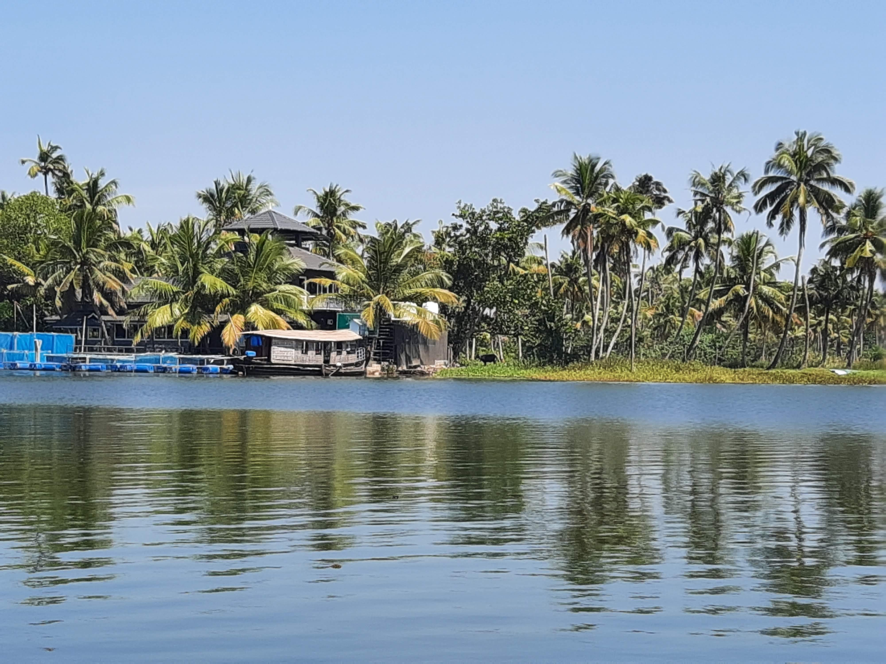

Go Back
Kochi

Kochi was my first stop in India and served as a great introduction to the country. Located in the southern Kerala state Kochi itself is a city with about 2.1 million people in the metro area. Called the "Queen of the Arabian Sea", Kochi was an important spice trading centre on the west coast of India from the 14th century onward, and maintained a trade network with Arab merchants from the pre-Islamic era. In 1505, the Portuguese established trading ports in Kochi. I only spent a few days in Kochi but am eager to return as I enjoyed exploring the old town and seeing the beautiful nature sights near it. Here are some of my recommendations for a short visit to Kochi.
One of the most popular activities in the region is to take a boat tour through the Kerala Backwaters. This is a network of rivers and channels through lush tropical rainforest. As Kerala is located in India's south it's fully tropical like most of Southeast Asia (this differs from the North of India). The tour itself was with a friendly and hospitable guide who went pulling the boat along by driving a large stick into the ground and pushing us forward. The boat ride was slow but very scenic. We had a memorable stop at a local business where the local people used coconut husks to create large ropes that were later sold. We enjoyed a lunch that consisted of vegetable curries and rice served on a banana leaf. You can spot some wildlife particulary birds and if you're lucky some lizards like iguanas. The tour I went on was very cheap probably just a few usd. Most accomodations from the Kochi city will be able to help arrange tours to the Kerala Backwaters.
I enjoyed walking (and tuk tuking) around the old town. As mentioned the old town dates back hundreds of years and is full of interesting buildins and history. Some of the most notable places to see are the Chinese fishing nets on the beach, the Santa Cruz Cathedral Basilica and Jew town. Near the beach and fishing nets are plenty of vendors selling different local goods and souvenirs. There are also many restaurants in this area, both sit down and street food. The Basilica is very beautiful inside as it's filled with detailed colourful paintings. This is a reminder of the Portuguese influence in the area.
Jew Town is a short tuk tuk ride away from the beach area of the old town. Jew Town has many notable features such as synagogues, museums, exhibitions and shopping. This is definitely the best area to buy some local souvenirs as well as spices. If you're like me and love spices in food it's extremely fascinating to see the spice stores they have here and all the massive variety that is common. It's no wonder these spices were so sought after throughout history. It's a great area to take a walk around and see all the interesting things you can discover.
Watching a Show at the Kerala Kathakali Centre was a very unique memorable experience that gave a window into the local culture and traditions. The Kathakali Centre is an arts centre known for traditional mask performances as well as martial arts. The tickets were relatively cheap and you can actually show up early to watch the performers get dressed up and apply their face painting before the show. The show was a well choreographed story delivered through interpretive dance. The costumes were colourful and bold. This was a really cool experience that I recommend in Kochi.
In the area next to the beach and the Chinese fishing nets there were many different restaurants serving all the Indian favourite meals. My first meal in India was a delicious chicken biryani from this area from one of the restaurants. It's common to find a variety of curries, wraps, and other food in this area. Aside from the many restaurants in this area there street vendors selling a variety of street food like samosas, pakora etc. Another great little food stall was Aji's tea stall. It's located on KB Jacob road. I think I came to this tea stall everyday to enjoy a chai tea and eat some tasty deep fried street snacks. This was my introduction to the chai tea culture that is common in India. You'll see food stalls packed with customers sipping on small cups of delicious chai tea. This particiular food stall was always packed with people. As with most of the country delicious food and drink is never too far away.
Pictured below from left to right: chicken biryani, vegetables curry with rice from the Kerala Backwaters tour.
When I visited I was still keen on staying in hostels so I chose Zostel Kochi. I'd recommend Zostel Kochi if you're into hostels. The staff here were friendly and helpful as I had to check in quite late. They showed me to my room and didn't worry about me paying until the next morning. They offer tours and travel advice which also helps to arrange trips to places like the Kerala Backwaters or Munnar. Munnar is a destination I'd like to visit in the future which features beautiful rice terraces on rolling hills. I enjoyed the rooftop at the hostel where you could relax, lounge and play different games with fellow travellers. Other than Zostel Kochi there were plenty of hostels and hotels in the area ranging from budget price to 5 star. The Old town is the best place to stay in Kochi in my opinion as it has plenty of activities and charm. The modern city of Kochi is quite expansive and features many different areas. The areas near the airport are more developed with bigger roads, shopping options etc but don't offer so much history like the old town does. You should expect about an hour drive to and from the airport to reach the old town. When I visited Uber was operating in the area which makes it relatively easy to find transportation. Once you're in the old town you can bargain for a tuk tuk ride around the local area.